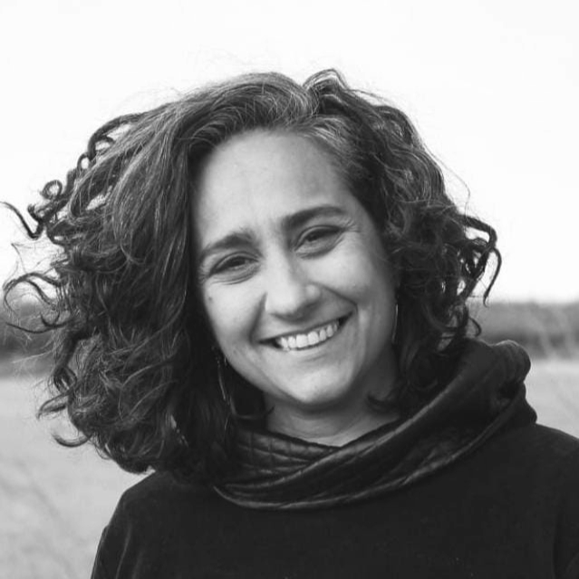

Por una gestión cultural comprometida con la ampliación de derechos donde prime lo afectivo como herramienta política y el arte como herramienta de transformación social.

Ma. Julia Logiódice es Doctora en Ciencias
Sociales, Magister en Estudios Culturales y Licenciada en
Ciencia Política. Gestora cultural, militante feminista,
actriz, investigadora,
profesora universitaria de grado
y posgrado.
Dannae Abdalla de Sa es Técnica en Gestión Cultural y Postitulada en Artes Escénicas. Es actriz, gestora cultural, investigadora, profesora de teatro y militante feminista.